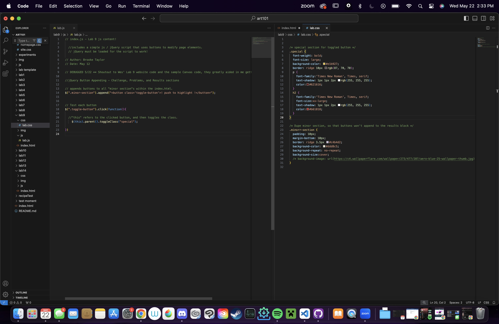
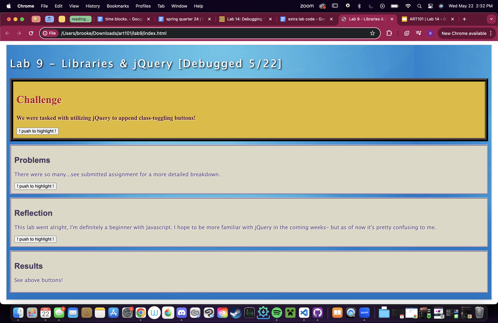

Lab 14 - Debugging Tools & Strategies
Challenge
We were tasked with going back through our old labs and debugging any errors we came across!
Problems
Thankfully, the only major problem I came across was in my Lab 9 - which involved toggling classes using functions & buttons. Only one of my three buttons actually worked, and would affect all instances of the initial class at once rather than individually, as I intended it to.
Reflection
This assignment went well, I was able to fix up the technical errors in Lab 9 and then further optimize it to be, in my opinion, better than the first rendition.
Debugging
Honestly, I don't even know how to describe the process of getting this to work - I thought I'd found an epiphany with the 'important!' statement in CSS, but after altering that and my JS it just.. got itself working? See the submitted assignment for a more detailed recollection!
 Results
See above!